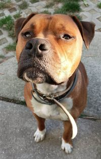

Üdvözöllek az oldalamon!

A nevem Dreilinger Vanessza Maja és ez egy általam készített weboldal. Itt megtalálhatók a hobbiaim, és általam készített fényképek egyaránt.
Jelenéleg a SZÁMALK-Szalézi Technikum és Szakgimnáziumban tanulok. Első évemet kezdtem 2022-ben a Szoftverfejlesztő és tesztelő szakot.